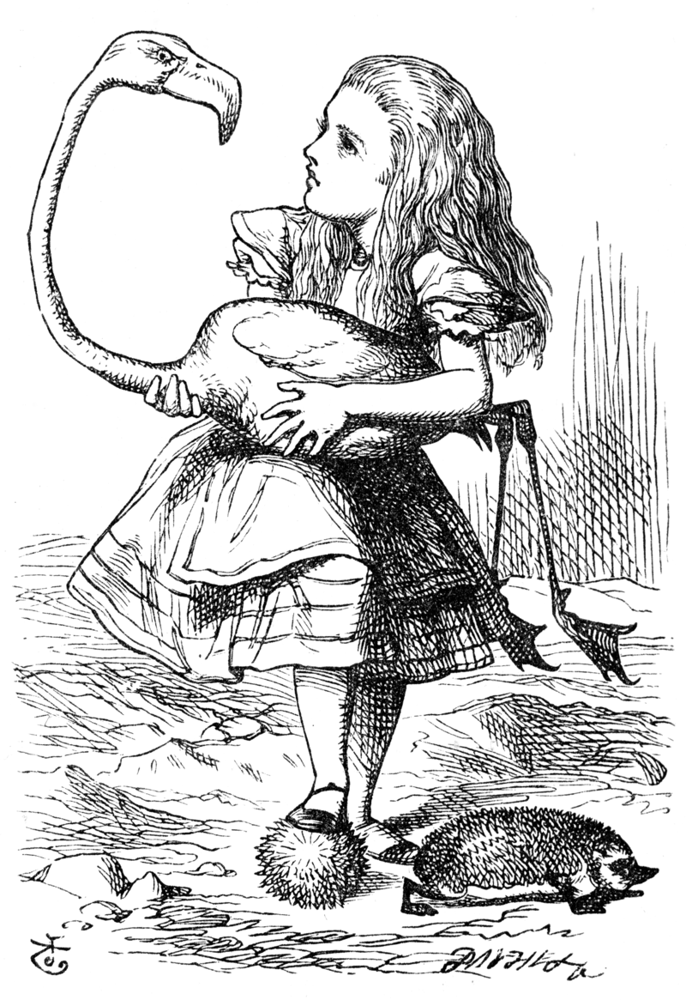
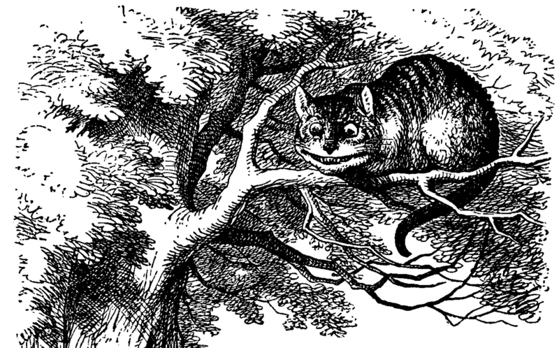

List of Chapters:
Alice, a girl of seven years, is feeling bored and drowsy while sitting on the riverbank with her elder sister. She then notices a talking, clothed White Rabbit with a pocket watch run past. She follows it down a rabbit hole when suddenly she falls a long way to a curious hall with many locked doors of all sizes. She finds a small key to a door too small for her to fit through, but through it she sees an attractive garden. She then discovers a bottle on a table labelled "DRINK ME," the contents of which cause her to shrink too small to reach the key which she has left on the table. She eats a cake with "EAT ME" written on it in currants as the chapter closes. (Back Top ↑)
Chapter Two opens with Alice growing to such a tremendous size her head hits the ceiling. Alice is unhappy and, as she cries, her tears flood the hallway. After shrinking down again due to a fan she had picked up, Alice swims through her own tears and meets a Mouse, who is swimming as well. She tries to make small talk with him in elementary French (thinking he may be a French mouse) but her opening gambit "Où est ma chatte?" ("Where is my cat?") offends the mouse and he tries to escape her. (Back Top ↑)
The sea of tears becomes crowded with other animals and birds that have been swept away by the rising waters. Alice and the other animals convene on the bank and the question among them is how to get dry again. The Mouse gives them a very dry lecture on William the Conqueror. A Dodo decides that the best thing to dry them off would be a Caucus-Race, which consists of everyone running in a circle with no clear winner. Alice eventually frightens all the animals away, unwittingly, by talking about her (moderately ferocious) cat. (Back Top ↑)
The White Rabbit appears again in search of the Duchess's gloves and fan. Mistaking her for his maidservant, Mary Ann, he orders Alice to go into the house and retrieve them. Inside the house she finds another little bottle and drinks from it; immediately she starts growing again. The horrified Rabbit orders his gardener, Bill the Lizard, to climb on the roof and go down the chimney. Outside, Alice hears the voices of animals that have gathered to gawk at her giant arm. The crowd hurls pebbles at her, which turn into little cakes. Alice eats them, and they reduce her again in size. (Back Top ↑)
Alice comes upon a mushroom and sitting on it is a blue Caterpillar smoking a hookah. The Caterpillar questions Alice and she admits to her current identity crisis, compounded by her inability to remember a poem. Before crawling away, the caterpillar tells Alice that one side of the mushroom will make her taller and the other side will make her shorter. She breaks off two pieces from the mushroom. One side makes her shrink smaller than ever, while another causes her neck to grow high into the trees, where a pigeon mistakes her for a serpent. With some effort, Alice brings herself back to her normal height. She stumbles upon a small estate and uses the mushroom to reach a more appropriate height. (Back Top ↑)
A Fish-Footman has an invitation for the Duchess of the house, which he delivers to a Frog-Footman. Alice observes this transaction and, after a perplexing conversation with the frog, lets herself into the house. The Duchess's Cook is throwing dishes and making a soup that has too much pepper, which causes Alice, the Duchess, and her baby (but not the cook or grinning Cheshire Cat) to sneeze violently. Alice is given the baby by the Duchess and to her surprise, the baby turns into a pig. The Cheshire Cat appears in a tree, directing her to the March Hare's house. He disappears but his grin remains behind to float on its own in the air prompting Alice to remark that she has often seen a cat without a grin but never a grin without a cat. (Back Top ↑)
Alice becomes a guest at a "mad" tea party along with the March Hare, the Hatter, and a very tired Dormouse who falls asleep frequently, only to be violently awakened moments later by the March Hare and the Hatter. The characters give Alice many riddles and stories, including the famous 'Why is a raven like a writing desk?'. The Hatter reveals that they have tea all day because Time has punished him by eternally standing still at 6 pm (tea time). Alice becomes insulted and tired of being bombarded with riddles and she leaves claiming that it was the stupidest tea party that she had ever been to. (Back Top ↑)
Alice leaves the tea party and enters the garden where she comes upon three living playing cards painting the white roses on a rose tree red because The Queen of Hearts hates white roses. A procession of more cards, kings and queens and even the White Rabbit enters the garden. Alice then meets the King and Queen. The Queen, a figure difficult to please, introduces her signature phrase "Off with his head!" which she utters at the slightest dissatisfaction with a subject. Alice is invited (or some might say ordered) to play a game of croquet with the Queen and the rest of her subjects but the game quickly descends into chaos. Live flamingos are used as mallets and hedgehogs as balls and Alice once again meets the Cheshire Cat. The Queen of Hearts then orders the Cat to be beheaded, only to have her executioner complain that this is impossible since the head is all that can be seen of him. Because the cat belongs to the Duchess, the Queen is prompted to release the Duchess from prison to resolve the matter. (Back Top ↑)
The Duchess is brought to the croquet ground at Alice's request. She ruminates on finding morals in everything around her. The Queen of Hearts dismisses her on the threat of execution and she introduces Alice to the Gryphon, who takes her to the Mock Turtle. The Mock Turtle is very sad, even though he has no sorrow. He tries to tell his story about how he used to be a real turtle in school, which the Gryphon interrupts so they can play a game. (Back Top ↑)
The Mock Turtle and the Gryphon dance to the Lobster Quadrille, while Alice recites (rather incorrectly) "'Tis the Voice of the Lobster". The Mock Turtle sings them "Beautiful Soup" during which the Gryphon drags Alice away for an impending trial. (Back Top ↑)

Alice attends a trial whereby the Knave of Hearts is accused of stealing the Queen's tarts. The jury is composed of various animals, including Bill the Lizard, the White Rabbit is the court's trumpeter, and the judge is the King of Hearts. During the proceedings, Alice finds that she is steadily growing larger. The dormouse scolds Alice and tells her she has no right to grow at such a rapid pace and take up all the air. Alice scoffs and calls the dormouse's accusation ridiculous because everyone grows and she cannot help it. Meanwhile, witnesses at the trial include the Hatter, who displeases and frustrates the King through his indirect answers to the questioning, and the Duchess's cook. (Back Top ↑)
Alice is then called up as a witness. She accidentally knocks over the jury box with the animals inside them and the King orders the animals be placed back into their seats before the trial continues. The King and Queen order Alice to be gone, citing Rule 42 ("All persons more than a mile high to leave the court"), but Alice disputes their judgement and refuses to leave. She argues with the King and Queen of Hearts over the ridiculous proceedings, eventually refusing to hold her tongue. The Queen shouts her familiar "Off with her head!" but Alice is unafraid, calling them out as just a pack of cards; just as they start to swarm over her. Alice's sister wakes her up from a dream, brushing what turns out to be some leaves and not a shower of playing cards from Alice's face. Alice leaves her sister on the bank to imagine all the curious happenings for herself. (Back Top ↑)
Links to the Chapters:
Page created by Emil Petkov© (Text and image source: Wikipedia.org)